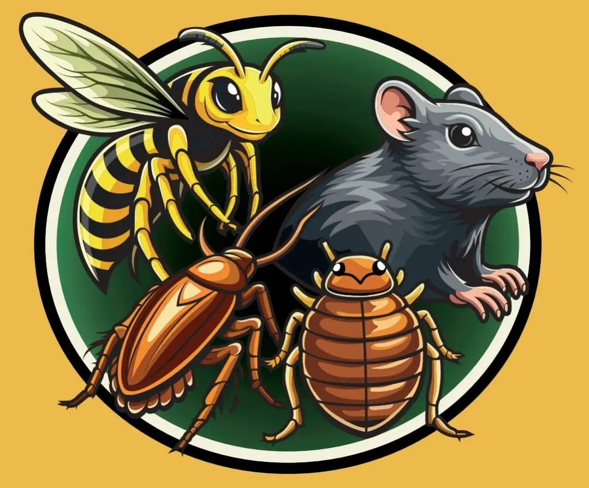
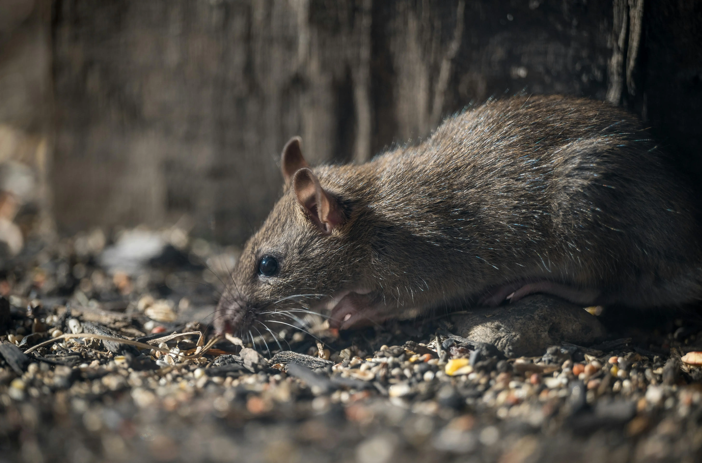

Dératisation & Destruction de Frelons Asiatiques à Toulouse et Agglomération Rats · Frelons · Cafards · Punaises de lit — Intervention Rapide < 2h
Bruits dans les cloisons la nuit ? Nid près de vos enfants ? Infestation dans votre cuisine ?
Chaque jour sans traitement, la situation s'aggrave.
DÛ Ô NUISIBLES intervient vite et on règle le problème.
Un nuisible repéré, c'est rarement seul. Rats, cafards, frelons asiatiques, punaises de lit — sans traitement professionnel, une infestation double en quelques semaines. Dû Ô Nuisibles intervient avant que ça empire : diagnostic sur place, traitement homologué, traitement professionnel certifié.
⏱️ Nous sommes disponibles maintenant:
• 2h → Aucamville, Castelginest, Saint-Alban, Fonbeauzard, Saint-Jory, Fenouillet, Bruguières, Gratentour, Lespinasse, Montberon, Pechbonnieu, Gagnac
• 4h → Toulouse, Blagnac, Beauzelle, L'Union, Saint-Jean, Seilh, Colomiers…
• Dans la journée → Toulouse et ses environs
👉 Appelez maintenant — on évalue votre situation gratuitement, sans engagement
